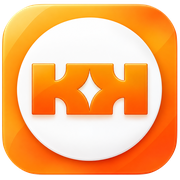

KEREK 3.5.0 · Autopilot 2.2
Сначала в прежнем KEREK: Профиль → Настройки → Экспорт JSON. Сохраните файл отдельно и не публикуйте его.
Копия включает корзину и расходы. Для старых версий сохраняются также отдельные данные Autopilot.
Закройте другие вкладки KEREK и старую установленную версию. Не очищайте Safari, localStorage или другие данные сайта. Открывайте прежний адрес и браузер.
Меняются файлы, а не деньги. База 3.2 сохраняется; из версий 3.0 и ниже записи переносятся один раз. Если обновление недоступно — не создавайте новую базу поверх старой.